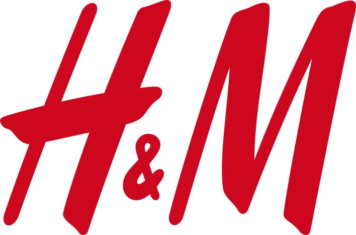
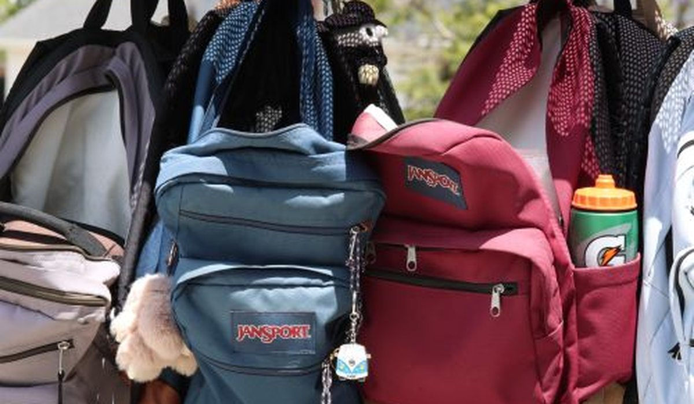

En bref
Pour une rentrée à 100 €, Kiabi est nettement la plus rentable avec 9 pièces, contre 6 chez H&M et 4 chez Zara Kids. Zara Kids ne se justifie que pour deux ou trois pièces marquantes, pas pour un vestiaire complet. H&M se place entre les deux et garde l'avantage sur la stabilité des tailles d'une collection à l'autre.
- 100 € couvrent une rentrée complète chez Kiabi, à peine la moitié chez Zara Kids
- Le prix moyen par pièce va de 11,10 € chez Kiabi à 25,30 € chez Zara Kids
- Zara Kids annonce 2,5 cm de moins que Kiabi sur un même 8 ans, soit une demi-taille
- Sur les baskets, l'écart de prix entre les trois marques est le plus faible du panier
Sommaire de ce comparatif
Ce que 100 euros permettent d'acheter
La question de la rentrée n'est pas de savoir quelle marque fait le plus joli pantalon, mais combien de vêtements votre enfant rapporte à la maison pour un budget fixe. Nous avons donc posé la même liste chez les trois marques, puis compté.
01Le meilleur budget rentrée9 pièces pour 100 €8,5/10
02

Le plus régulier6 pièces, tailles stables7,4/1003 Le plus mode4 pièces, coupes ajustées6,8/10
Le plus mode4 pièces, coupes ajustées6,8/10
Le plus mode4 pièces, coupes ajustées6,8/10| Marque | Note /10 | Pièces pour 100 € | Prix moyen par pièce | Écart de taille (8 ans) | Le point fort |
|---|---|---|---|---|---|
| KiabiNotre choix | 8,5 | 9 pièces | 11,10 € | +0,5 cm | Le plus de vêtements pour 100 € |
| H&M | 7,4 | 6 pièces | 16,70 € | 0 cm | Les tailles les plus stables |
| Zara Kids | 6,8 | 4 pièces | 25,30 € | -2,5 cm | Le style, pièce par pièce |
Liste de rentrée identique pour un enfant de 8 ans, prix catalogue relevés hors soldes en septembre 2026.

L'écart est massif. Pour le même billet de 100 €, un enfant repart avec neuf pièces chez Kiabi, six chez H&M et quatre chez Zara Kids. Autrement dit, une rentrée complète d'un côté, deux tenues de l'autre.
Le prix poste par poste
Le détail compte, parce que l'écart ne se répartit pas uniformément. Voici la même liste de rentrée, poste par poste, au prix catalogue.
| Poste | Kiabi | H&M | Zara Kids |
|---|---|---|---|
| Pantalon | 12,99 € | 19,99 € | 29,95 € |
| T-shirt | 3,99 € | 6,99 € | 12,95 € |
| Sweat | 9,99 € | 14,99 € | 25,95 € |
| Veste légère | 19,99 € | 29,99 € | 39,95 € |
| Baskets | 14,99 € | 19,99 € | 29,95 € |
| Sac à dos | 9,99 € | 14,99 € | 22,95 € |
| Total de la liste | 71,94 € | 106,94 € | 161,70 € |
Liste de rentrée pour un enfant de 8 ans, prix catalogue relevés hors soldes en septembre 2026.
Le t-shirt est le poste où l'écart relatif est le plus violent, avec un rapport de plus de trois entre Kiabi et Zara Kids. Les baskets et la veste sont les postes où les trois marques se rapprochent le plus, l'écart tombant sous le facteur deux.
La liste complète passe sous les 72 € chez Kiabi, atteint 107 € chez H&M et dépasse 161 € chez Zara Kids. Pour deux enfants, cela devient l'écart entre une rentrée et deux rentrées.
Les tailles, laquelle suivre pour un enfant qui grandit
Un enfant de 8 ans change de taille dans l'année scolaire, souvent entre janvier et avril. La grille de tailles compte donc autant que le prix, parce qu'une marque qui taille court oblige à racheter à mi-année.
- Kiabi annonce 0,5 cm de plus que la moyenne du panel sur un 8 ans, ce qui laisse un peu de marge
- H&M est la plus proche de la moyenne, et surtout la plus stable d'une collection à l'autre
- Zara Kids annonce 2,5 cm de moins, il faut prendre la taille au-dessus dès la rentrée
- Sur un 8 ans, ces 2,5 cm représentent une demi-taille commerciale, soit environ six mois de port
Concrètement, un 8 ans Zara Kids correspond à un 7 ans Kiabi sur la longueur de haut. Si vous achetez chez Zara Kids, prenez directement le 10 ans, sinon le sweat sera court avant les vacances de février.
La tenue sur une année scolaire
Le vêtement de rentrée est celui qui souffre le plus, porté deux à trois fois par semaine et lavé autant. Nous avons dépouillé les avis clients des trois marques en ne gardant que ceux qui mentionnent le lavage, le rétrécissement ou une couture.
| Marque | Avis mentionnant le lavage | Problème le plus cité | Remplacement en cours d'année |
|---|---|---|---|
| H&M | 11 % | Col qui se détend | 8 % des avis |
| Kiabi | 14 % | Couleur qui passe | 6 % des avis |
| Zara Kids | 19 % | Rétrécissement | 12 % des avis |
Avis clients publiés sur les sites des marques et les plateformes d'avis, échantillon de septembre 2026.
Aucune des trois ne ressort comme fragile, mais Zara Kids concentre le plus d'avis sur le rétrécissement, ce qui aggrave son problème de taille. Kiabi tient mieux que son prix ne le laisse supposer, avec 6 % d'avis signalant un remplacement dans l'année, le meilleur score des trois.
Kiabi ou Zara Kids, comment choisir
Si vous équipez un enfant pour toute l'année
Kiabi. Neuf pièces pour 100 €, une grille qui laisse de la marge et le meilleur score sur le remplacement en cours d'année. C'est le choix rationnel pour une rentrée complète, surtout à partir de deux enfants.
Si vous rachetez toujours la même référence
H&M. C'est la marque dont la grille bouge le moins d'une collection à l'autre, donc celle où racheter le même pantalon un an plus tard fonctionne sans essayer.
Si vous cherchez deux ou trois pièces marquantes
Zara Kids, en prenant la taille au-dessus. Les coupes suivent les collections adultes et tiennent leur promesse sur le style, mais à 161 € la liste complète, la marque n'a pas de sens pour équiper une rentrée entière.
Si votre budget est sous 60 euros
Kiabi en priorité, complété par les soldes de fin d'été. La liste complète y passe sous 72 € au prix catalogue, et les basiques descendent encore en période de promotion.
Notre verdict
Pour la rentrée 2026, Kiabi l'emporte sans discussion avec 8,5/10. Neuf pièces pour 100 €, une grille de tailles qui laisse de la marge et le meilleur score des trois sur le remplacement en cours d'année.
H&M reste le choix de la tranquillité si vous rachetez les mêmes références chaque année. Zara Kids se garde pour une ou deux pièces, en prenant la taille au-dessus, mais équiper une rentrée entière chez elle coûte plus du double.
Questions fréquentes
Kiabi ou Zara Kids pour la rentrée scolaire 2026 ?
Kiabi, sans hésitation, pour une rentrée complète. Avec 100 €, un enfant de 8 ans repart avec 9 pièces chez Kiabi contre 4 chez Zara Kids. Zara Kids ne se justifie que pour deux ou trois pièces choisies.
Combien coûte une rentrée scolaire par enfant ?
Pour la même liste de six postes destinée à un enfant de 8 ans, comptez 71,94 € chez Kiabi, 106,94 € chez H&M et 161,70 € chez Zara Kids en prix catalogue hors soldes.
Faut-il prendre une taille au-dessus chez Zara Kids ?
Oui. Sur un 8 ans, la grille Zara Kids annonce 2,5 cm de moins que la moyenne du panel, soit une demi-taille. Prendre le 10 ans évite un sweat trop court dès février.
Quelle marque enfant tient le mieux une année scolaire ?
Sur les avis clients mentionnant le lavage, Kiabi obtient le meilleur score des trois avec 6 % d'avis signalant un remplacement en cours d'année, contre 8 % chez H&M et 12 % chez Zara Kids.
Quel est le poste le plus cher de la rentrée ?
La veste légère, de 19,99 € chez Kiabi à 39,95 € chez Zara Kids, suivie du pantalon et des baskets. Le t-shirt est en revanche le poste où l'écart relatif entre marques est le plus fort, avec un rapport de plus de trois.
Comment sont notées les marques de ce comparatif ?
Chaque marque est notée sur cinq critères, le prix catalogue, la qualité annoncée des matières, la cohérence des tailles, la livraison et une note globale pondérée. Les prix viennent des sites officiels, les écarts de taille des grilles publiées par les marques et la tenue au lavage des avis clients vérifiés.
Notre méthode
Ce comparatif repose sur des données publiques, vérifiables une par une.
- Les prix sont relevés sur les sites officiels des marques, hors code promo et hors soldes
- Les écarts de taille proviennent des grilles officielles publiées par les marques, comparées entre elles
- La tenue au lavage est établie à partir des avis clients vérifiés qui mentionnent rétrécissement ou décoloration
- Les compositions et les grammages sont ceux affichés sur les fiches produit
- Aucune marque ne finance ce comparatif, ne nous rémunère ni ne le relit avant publication